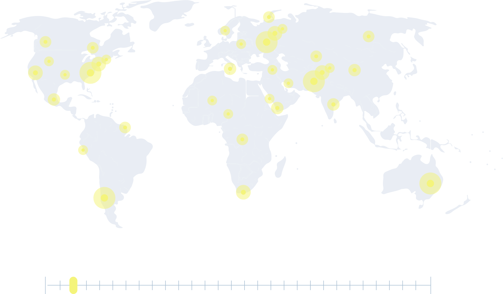
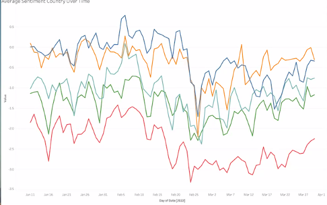
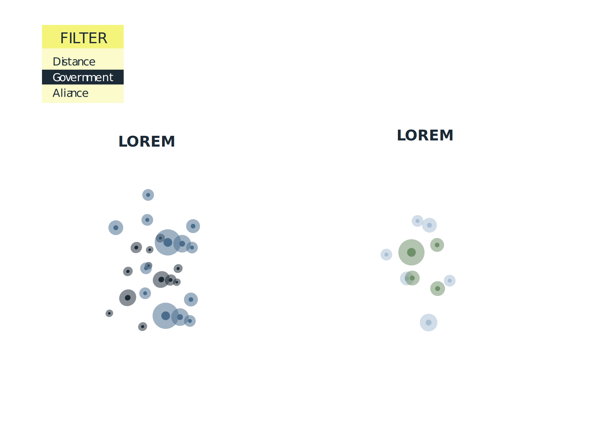
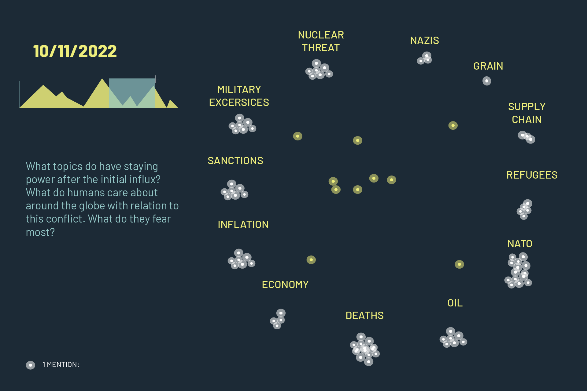

Russia invaded Ukraine starting the biggest military mobilization in Europe since World War II.
The invasion is likely to have major effects on people around the world, and the whole world is watching.
We have the ability to analyze
conflicts in ways we couldn't before
Explore with us different perspectives on how the media around the world has been covering the topic.
IN THE INTERNATIONAL EYE
What are the international mentions of the word 'ukraine' in the media since the beginning of the conflict?

How do different news outlets play into this?
Are they simply promoting an extreme attention grabbing event then moving on?
ability to see some news clips and how they are grabbing attention
news clips should come from the same day of coverage
SEE MORE
EMOTION
Sentiment analysis as a way of understanding
we can analyze the strength of emotions or tone in the articles from different areas
some players more neutral with strong reactions then return to neutrality
How can we better understand the role of our people's context on how the news is presented to us?
lets first look at distance from conflict
then highlight sentiment within
and then group these by ally - west - east - NATO - etc


What topics do have staying power after the initial influx? What do humans care about around the globe with relation to this conflict. What do they fear most
word cloud with time movement
gives us new insight into what people care about

A HUMAN CONFLICT
News coverage comes and
fades and doesn't always
follow the pace of events
on the ground